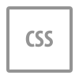

Projetos
Login & Cadastro
Readdup - Este projeto é uma aplicação web construída com TypeScript, Angular e SCSS, focada na criação de uma interface de login e cadastro de usuários. A tela permite que os usuários se autentiquem ou criem uma nova conta, proporcionando uma experiência de uso simples e fluida.
- Cadastro;
- Login;
POKEDEX
A Pokedex é uma aplicação que permite ao usuário interagir com os dados de Pokémons, buscando informações como nome,tipo, habilidades e imagem, tudo retirado da PokeAPI. O projeto tem como objetivo demonstrar como consumir e utilizar uma API em um site dinâmico utilizando JavaScript.
- Campo de buscar por nome ou tipo;
- Tela de Detalhes de cada pokemon;
- Lista todos os Pokémons da primeira geração;
- Botão de Favoritos.
- 
Validação de URLs
Criação de uma aplicação em Python utilizando Tkinter para manter o cadastro de endereços web.. Funcionalidades:
- Inclusão de URLs;
- Alteração de URLs;
- Exclusão de URLs;
- Listagem de URLs cadastradas;
- Validações das URLs.

To do list
A lista de tarefas permite aos usuários gerenciar suas atividades diárias de forma prática e eficiente. Foi criada utilizando Angular, e TypeScript. A aplicação oferece uma interface interativa e funcional para realizar operações de adicionar, alterar, excluir e visualizar tarefas.
- Adicionar Tarefa;
- Alterar Tarefa;
- Excluir Tarefa;
- Listagem de Tarefas.